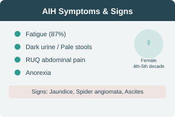

AIH — Etiology & Clinical Findings
Etiology & Pathogenesis
- Heterogenous chronic inflammatory hepatic disorder
- Circulating autoantibodies (ANA, ASMA, anti-LKM)
- Elevated serum gamma globulin
- Pathogenesis: unclear — maybe genetic predisposition
- Immunologic process against hepatocytes
- Precipitated by: stress, toxins, drugs, infections
Clinical Findings
Symptoms
- Common in females, 4th–5th decade
- Fatigue (87% of patients)
- Dark urine & light-colored stools
- RUQ abdominal pain
- Anorexia
Signs
- Enlarged tender liver, Jaundice
- Spider angiomata, Encephalopathy
- Ascites, Palpable spleen
Associated Autoimmune Disorders
Thyroiditis, RA, HA, IT, UC, IDDM, Sjögren syndrome, Graves disease, Dermatitis herpetiformis, Vitiligo, Myasthenia gravis, Pernicious anemia, Celiac disease
